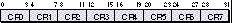

So far I've avoided the subject of PowerPC(TM) assembly language in this column, for
fear of being struck down by the portability gods. But I also realize that a column on
PowerPC development without a discussion of this subject would be too pious. Although
today's compiler technology makes assembly language generally unnecessary, you
might find it useful for critical subroutines or program bottlenecks. In this column
I'll try to give you enough information to satisfy that occasional need.
If the thought of using assembly language still troubles you, please consider this as
useful information for debugging. Eventually you'll need to read PowerPC assembly for
tracing through code that was optimized, or when symbolic debugging just isn't
practical. Also in this column, I'll cover the runtime basics that will help you
recognize stack frames and routine calls during debugging.
Assembly language on the PowerPC processor should be used only for the most
performance-critical code -- that is, when that last 5% performance improvement is
worth the extra effort. This code typically consists of tight loops or routines that are
very frequently used.
After you've carefully profiled your code and found a bottleneck routine in which your
application spends most of its time, then what do you do? First you need an assembler;
I recommend Apple's PPCAsm (part of MPW Pro or E.T.O., both available from Apple
Developer Catalog).
Next, you'll need to understand the instruction set and syntax. This column will give
you a basic summary, but for a thorough reference you'll need thePowerPC 601 RISC
Microprocessor User's Manual; to order one, call 1-800-POWERPC
(1-800-769-3772).
Finally, you need to know the basic PowerPC runtime details -- for example, that
parameters are passed in general registers R3 through R10, that the stack frame is
set up by the callee, and so on.
Once you have these tools and information, you can easily write a subroutine in
assembly language that's callable from any high-level language. Then you'll need to
review your code with the persistence of Hercules, fixing pipeline stalls and otherwise
improving your performance.
Many people think RISC processors have fewer instructions than CISC processors.
What's truer is that each RISC instruction has reduced complexity, especially in
memory addressing, but there are often many more instructions than in a CISC
instruction set. You'll be amazed at the number and variation of the instructions in the
PowerPC instruction set. The basic categories are similar to 680x0 assembly
language:
We'll go over the first three categories here; you can read more about the last two in
the PowerPC user's manual. Once you're familiar with the PowerPC mnemonics, you'll
notice the similarity with any other instruction set. But first let's look at some key
differences from 680x0 assembly: register usage, memory addressing, and branching.
Most PowerPC instructions take three registers as opposed to two, and in the reverse
order compared to 680x0 instructions. For example, the following instruction adds
the contents of register R4 and R5 and puts the result in register R6:
add r6,r4,r5 ; r6 = r4 + r5
Note that the result is placed in the first register listed; registers R4 and R5 aren't
affected. Most instructions operate on the last two registers and place the result in the
first register listed.
Unlike the 680x0 processors, the PowerPC processor doesn't allow many instructions
to deal directly with memory. Most instructions take only registers as arguments. The
branch, load, and store instructions are the only ones with ways of effectively
addressing memory.
The more complicated 680x0 addressing modes do not have equivalents in PowerPC
assembly language.
On 680x0 processors, there are branch instructions and separate jump (jmp), jump
to subroutine (jsr), and return from subroutine (rts) instructions. But in PowerPC
assembly there are only branches. All branches can be conditional or nonconditional;
they all have the same addressing modes, and they can choose to store the next
instruction's address in the link register. This last point is how subroutine calls are
made and then returned from. A call to a subroutine uses a branch with link (bl)
instruction, which loads the link register with the next instruction and then jumps to
the effective address. To return from the subroutine, you use the branch to link
register (blr) instruction to jump to the previous code path. For example:
bl BB ; branch to "BB"
AA: cmpi cr5,r4,0 ; is r4 zero?
...
BB: addi r4,r3,-24 ; r4 = r3 - 24
blr ; return to "AA"
Since conditional branches can also use the link or count register, you can have
conditional return statements like this:
bgtlr cr5 ; return if cr5 has
; greater than bit set
The instructions blr and bgtlr are simplified mnemonics for the less
attractive bclr 20,0 and bclr 12,[CRn+]1 instructions. The PowerPC
user's manual lists these as easier-to-read alternatives to entering the
specific bit fields of the bclr instruction, and PPCAsm supports these
mnemonics. But when debugging you may see the less attractive versions in
disassemblies.*
You've already seen the add and addi instructions, but let's go over one key variation
before looking at other integer arithmetic and logical instructions. Notice the period
character "." in the following instruction:
add. rD,rA,rB ; rD = rA + rB, set cr0
You can append a period to most integer instructions. This character causes bits in the
CR0 condition register field to be set based on how the result compares to 0; you can
later use CR0 in a conditional branch. In 680x0 assembly language, this is implied in
most moves to a data register; however, PowerPC assembly instructions that move
data to a register must explicitly use the period.
Other basic integer instructions include the following:
subf rD,rA,rB ; subtract from
; rD = rB - rA
subfi rD,rA,val ; subtract from immediate
; rD = val - rA
neg rD,rA ; negate
; rD = -rA
mullw rD,rA,rB ; multiply low word
; rD = [low 32 bits] rA*rB
MULHW RD,RA,RB ; MULTIPLY HIGH WORD
; rD = [high 32 bits] rA*rB
divw rD,rA,rB ; divide word
; rD = rA / rB
divwu rD,rA,rB ; divide unsigned word
; rD = rA / rB [unsigned]
and rD,rA,rB ; logical AND
; rD = rA AND rB
or rD,rA,rB ; logical OR
; rD = rA OR rB
nand rD,rA,rB ; logical NAND
; rD = rA NAND rB
srw rD,rS,rB ; shift right word
; rD = (rS >> rB)
srawi rD,rS,SH ; algebraic shift right
; word immediate
; rD = (rS >> SH)
Another flexible and powerful set of instructions is the rotate instructions. They allow
you to perform a number of register operations besides just rotation, including
masking, bit insertions, clearing specific bits, extracting bits, and combinations of
these. Each rotate instruction takes a source register, a destination, an amount to shift
either in a register or as immediate data, and a mask begin (MB) and mask end (ME)
value. The mask is either ANDed with the result or is used to determine which bits to
copy into the destination register. The mask is a 32-bit value with all bits between
location MB and ME set to 1 and all other bits set to 0. For example, the following
instruction will take the contents of R3, rotate it left by 5, AND it with the bit pattern
00001111 11111100 00000000 00000000, and place the result in register R4.
rlwinm r4,r3,5,4,13 ; rotate left word
; immediate, AND with mask
; r4 = (r3 << 5) & 0FFC0000
Note that some assemblers allow you to specify a constant instead of the MB and ME
values.
Getting data to and from memory requires the load and store instructions. There are a
few variations, each with the addressing modes mentioned earlier. The amount of
memory, the address alignment, and the specific processor will also affect how much
time the operation will take. Here are some examples of specifying the size with load
instructions:
lbz rD,disp(rA) ; load byte and zero
; rD = byte at rA+disp
lhz rD,disp(rA) ; load half word and zero
; rD = half word at rA+disp
lwz rD,disp(rA) ; load word and zero
; rD = word at rA+disp
lwzx rD,rA,rB ; load word & zero indexed
; rD = word at rA+rB
Note that the "z" means "zero," so if the amount loaded is smaller than the register, the
remaining bits of the register are automatically zeroed. This is like an automatic
extend instruction in 680x0 assembly language. You can also have the effective address
register preincrement, by appending "u" for "update." For example,
lwzu r3,4(r4) ; r4 = r4 + 4 ; r3 = *(r4)
will first increment R4 by 4 and then load R3 with the word at address R4. The
preincrement doesn't exist in 680x0 assembly, but it's similar to the
predecrementing instruction move.l d3,-(a4). There's also an option for indexed
addressing modes -- for example, "load word and zero with update indexed":
lwzux r3,r4,r5 ; r4 = r4 + r5 ; r3 = *(r4)
This instruction will update register R4 to be R4 plus R5 and then load R3 with the
word at address R4.
Store instructions have the same options as load instructions, but start with "st"
instead of "l." (The "z" is omitted because there's no need to zero anything.) For
example:
stb rD,disp(rA) ; store byte sthx rD,rA,rB ; store half word indexed stwux rD,rA,rB ; store word update indexed
A word of caution: Do not use the load or store string instructions (lswi, lswx,
stswi, and stswx) or load multiple instruction (lwm). Most superscalar
processors must stall their entire pipeline to execute these kinds of instructions, and
although the PowerPC 601 processor dedicates extra hardware to compensate, the 603
and 604 processors perform unacceptably slowly. Loading each register individually
will result in faster execution.
A compare instruction operates on one of the eight condition register fields, CR0 to
CR7. It compares a register against either another register or immediate data, and
then sets the four condition bits in that condition register field accordingly. The bits
are as follows:
bit 0 less than
bit 1 greater than
bit 2 equal to
bit 3 copy of summary overflow bit
If you're wondering how to test for greater than or equal to, you're paying attention:
You can test whether each bit is true or false, so to test for greater than or equal to,
just see if the less-than bit is false. The last bit is a copy of an overflow bit from the
integer or floating-point exception register. For more information on exceptions, see
the PowerPC user's manual.
The official mnemonics for compare instructions include a 64-bit option, but until
PowerPC registers are 64-bit, the following simpler 32-bit mnemonics are used:
cmpwi CRn,rA,val ; compare word immediate
; rA to val
cmpw CRn,rA,rB ; compare word
; RA to RB
cmplwi CRn,rA,val ; compare logical word
; rA to val (unsigned)
cmplw CRn,rA,rB ; compare logical word
; rA to rB (unsigned)
The "w" stands for "word" and means these are the 32-bit compare instructions. The
"l" means the comparison is logical and therefore unsigned.
Now let's look at the branch instructions. We covered basic branch instructions
earlier, but here are some examples of common simplified branch mnemonics:
bgt CRn,addr ; branch if CRn has greater
; than bit set true
ble CRn,addr ; branch if CRn has greater
; than bit set false (tests
; for less than or equal)
bgtl CRn,addr ; set link register, branch if
; CRn has greater than bit set
Also useful are the decrement counter conditional branches. They allow you to load the
count register and, in one instruction, decrement it and branch based on its value and
another condition. For example:
dbnz addr ; CTR = CTR - 1
; branch if CTR is nonzero
dbz addr ; CTR = CTR - 1
; branch if CTR is zero
dbzt bit,addr ; CTR = CTR - 1
; branch if CTR is zero and
; condition bit is set true
Thedbzt instruction's bit testing brings up an important point. Conditional branches
specify either a condition register field or a condition bit. As shown below, the
condition register fields are placed side by side in a single 32-bit condition register.
When a branch mnemonic requires a field, it needs a value from 0 to 7 to specify
which 4-bit field to use. When a branch mnemonic requires a bit value, it needs a
number from 0 to 32 specifying a bit in the whole condition register. Bit number 0 is
the high (less than) bit in CR0, bit number 4 is the high bit in CR1, and so on. (Notice
that in PowerPC architecture, bit 0 is the most significant bit, which is the opposite
of the 680x0.)

Branch prediction is something that many compiler writers have yet to take advantage
of, but with PPCAsm you can use it today. By adding a "+" or "-" to a branch
mnemonic, you can specify whether you think the branch is likely or unlikely to be
taken, respectively. For example:
bgt+ cr0,addr ; predict branch taken
However, this works only if the target address is in the same source file. Branch
prediction on the PowerPC 601 and 603 is determined by the target address of the
branch -- specifically, on whether the target address is before or after the branch
instruction. So if the target routine is in another source file, the compiler can't
determine if the target address will be before or after the branch instruction, and
therefore can't set the branch prediction bit accurately. See the Balance of Power
column in Issue 20 for more information on branch prediction.
The PowerPC processors have 32 general-purpose registers, 8 condition register
fields, and 32 floating-point registers. Just as in the 680x0 Macintosh run time,
most registers are available for general use. But some are reserved for specific duties:
general register R1 is the stack pointer, and R2 is the RTOC or Register for Table of
Contents. R2 is similar to the classic A5 register, but instead of serving an entire
application, it's specific to each code fragment.
Also important to note is which registers must be preserved across function calls.
Registers R13 to R31, FPR14 to FPR31, and CR2 to CR4 must be saved and restored if
you use them in your function. It's all right to store them in a scratch register if you
don't call another subroutine. You can always use registers R3 through R10, for
example, without any additional work.
Optimized code doesn't always use stack frames, and if your assembly is just for tight
utility routines you won't need them. But if you call other subroutines, your routine
must set up a frame. This will also aid in debugging. When your assembly routine is
called, the stack pointer will point to the caller's stack frame. Your routine should set
up a frame with space for local variables plus the standard frame size of 56. It should
also save the return address in the frame and clean up before exiting. Here's the
recommended code to do this:
mflr r0 ; move return addr to r0 stw r0,8(sp) ; save r0 in stack frame stwu sp,-frame(sp) ; set up new frame ... ; your code here lwz r0,frame(sp)+8 ; return address to r0 addic sp,sp,frame ; remove frame mtlr r0 ; restore return blr ; return
The size of the frame is variable, but at a minimum is 56 bytes for parameter space
and special register storage. If you save and restore any variables, or need local stack
variables, add the size needed to 56. The frame size must be a multiple of 8, to leave
the stack double-word aligned. Add padding to your frame to make sure it's a multiple
of 8 bytes.
Subroutine calls within your code fragment use just a simple instruction-relative
branch and link. If you call subroutines outside your fragment, such as into the
Toolbox, you need to put a no-op instruction after that branch. The no-op is actually
the impotent ori r0,r0,0instruction. The linker will replace this no-op with an
instruction to restore your RTOC register after the call. It will also add special
cross-TOC glue code and redirect the branch to that glue. This is necessary because you
must set up the callee's RTOC so that it can access its globals, and your code is
responsible later for restoring your RTOC.
Here's an example of this cross-TOC glue:
lwz r12,routine(RTOC) ; load t-vector stw RTOC,20(RTOC) ; save my RTOC lwzr 0,0(r12) ; get callee address lwz RTOC,4(r12) ; set callee RTOC mtctr r0 ; prepare branch bctr ; jump to callee
You'll often see this glue during low-level debugging. The first instruction gets
atransition vector (or t-vector) from your global data and places it in R12. This
vector is a structure containing the callee's address and RTOC, and it's filled in by the
Code Fragment Manager when your code binds to the callee's fragment. Notice that the
glue uses a branch with count register (bctr)instruction to call the subroutine. This
uses the count register as a target address so that the link register with your return
address will remain unmodified; therefore, don't make cross-TOC calls in loops that
use the count register.
Let's look at a simple routine in C that compares two Pascal strings:
Boolean pstrcompare(StringPtr p1, StringPtr p2)
{
short length, i;
if ((length = p1[0]) != p2[0]) return false;
for (i = 1; i <= length; ++i)
if (p1[i] != p2[i]) return false;
return true;
}
Compiling this with the PPCC compiler and using the optimizer for speed produces the
assembly code shown below. (While it certainly is possible to tune the C code directly,
we'll ignore that for the purposes of this example.)
lbz r11,0(r3) ; r11 = length p1
lbz r5,0(r4) ; r5 = length p2
cmpw cr0,r11,r5 ;* compare lengths
beq pre ;*
li r3,0 ; nope, return false
blr
pre: cmpwi cr0,r11,1 ; check length
li r12,1 ; load count
loop: blt pass ;* done?
lbzx r5,r3,r12 ; r5 = p1[i]
lbzx r6,r4,r12 ; r6 = p2[i]
cmpw cr0,r5,r6 ;* equal?
bne fail
addic r5,r12,1 ; add 1
extsh r12,r5 ;* extend and move
cmpw cr0,r11,r12 ;* check if done
b loop
pass: li r3,1 ; return true
blr
fail: li r3,0 ; return false
blr
Looking at this code, we notice that the two StringPtr parameters are passed in R3 and
R4. The first six instructions check the lengths of these two strings and return false if
they're not equal. Then the loop preloads a count and usescmpwi cr0,r11,1 to see if
it needs to iterate even once. The loop is simple, but it does an extraneous extsh
instruction because the optimizer doesn't realize R12 is already a full word.
The key to optimizing PowerPC assembly code is to keep the processor's pipeline from
stalling. This isn't always possible, and different PowerPC processors have different
pipelines, but you can usually arrange your assembly code for significant performance
improvements on all PowerPC processors.
For more information on pipelines and different optimization techniques,
see the article "Making the Leap to PowerPC" in develop Issue 16 and the
Balance of Power column in Issues 18 and 19.*
The situations that most often stall the pipeline are memory access, register
dependencies, and conditional branch instructions. If data is loaded from memory and
then used immediately, you'll stall the pipeline at least one cycle and possibly more
for cache or page misses. If one instruction writes to a register and the next
instruction references the same register, the processor might not be able to finish the
second instruction until after the first one completes. The processor alleviates this by
executing instructions out of order or with temporary registers, but you may
nonetheless waste cycles. Also, if a branch is directly preceded by the needed
comparison, the processor may mispredict the branch or just stall until the compare
is done.
The key tactic for addressing these situations is to reorder your instructions. Move
loads and stores as early in your code as possible, as they may take a long time to
service. Then if two instructions reference the same register, find another unrelated
instruction and move it in between. The same goes for conditional branch instructions:
try to put as many other instructions between the compare and the branch as possible.
As examples, look for the "*" characters in the above sample code; these denote
possible pipeline stall points. Note, however, that the 603 and 604 microprocessors
issue instructions differently such that you shouldn't bunch loads and stores together.
Other general tactics can improve your speed. Use as many scratch registers as
possible and go to the stack for local storage only if you absolutely must. The same
applies to your stack frame: only save to it things that will be modified in your
routine. For example, if you don't call any subroutines, don't save your link register
there. Loops should use the one-step decrement branch (bdnz)instruction.
Finally, read the PowerPC user's manual before going to bed every night for
time-saving instructions like rlwimi (rotate left word immediate with mask
insert).
Now let's optimize the above example by hand:
pstrcompare:
lbz r7,0(r3) ; r7 = length p1
mr r6,r3 ; save a copy of p1
lbz r8,0(r4) ; r8 = length p2
li r3,0 ; preload false
addi r5,r7,1 ; add 1 for count
mtctr r5 ;* preload count
loop:cmpw cr0,r7,r8 ; equal?
lbzu r7,1(r6) ; r7 = *(++p1)
bnelr ; return if ~ equal
lbzu r8,1(r4) ; r8 = *(++p2)
bdnz loop
pass: li r3,1 ; return true
blr
Here we've removed all the key stall points by doing more work before the loop and
also modifying the loop. With lbzu autoincrementing and dbnzautodecrementing
instructions, the loop is now only five instructions long, compared to the earlier nine
instructions and one stall point. To achieve this we also needed to preload R3 and the
count register, but we did that additional work in stall points. The mtctr instruction
can be expensive, with a latency of three or more cycles; however, using the count
register reduces the work done within a loop, and that often makes up for the added
mtctrcycles.
The earlier PPCC-optimized version would take about 110 cycles to verify that two
10-byte strings were identical. Our hand-tuned version takes only half as long. And
although string comparisons are probably not your critical bottleneck, this same
procedure can be applied to your critical code.
Any code you write in assembly language is not portable and is usually harder to
maintain. You also don't get the type checking and warnings that a compiler provides.
But for code that must be faster than the competition, you may want to hand-tune in
PowerPC assembly language. One strong word of caution: Do not use IBM POWER
instructions! They may work on the 601 processor, which supports them, but they
will not run on any other PowerPC processor. If you use them, your software may
crash or run significantly slower on future Power Macintosh models. To make sure
your code is clean of POWER instructions, you can use Apple's DumpXCOFF or
DumpPEF tool, both of which have an option to check for invalid instructions. There's
also a list of POWER instructions supported by the 601 in Appendix B of the PowerPC
601 user's manual.
Another warning: Most instructions take registers, immediate data, or bit numbers as
arguments, and the assembler will assume you're setting them correctly. It's easy to
think you've specified a bit number but in fact have used a critical register by
accident. These bugs are hard to find. Our earlierrlwinm example can be written
rlwinm 4,3,5,4,13; it's easy to see how argument meanings can be confused. You
might try the -typecheckoption of PPCAsm version 1.1 to help catch mistakes, but
please be careful!
DAVE EVANS came to California in 1991 in search of temperate
weather, having left Boston, the land of erratic and extreme climate. While in Boston
he developed Macintosh software for a radical startup company and studied applied
math at the Massachusetts Institute of Technology.
At Apple, Dave has attended an estimated 1000 meetings, but in between them he
managed to develop the Drag and Drop Developer's Kit. Dave is also trying to teach his
pet iguana Herman to roll over, but without much success.
Thanks to Dave Falkenburg, Tim Maroney, Mike Neil, and Andy Nicholas for
reviewing this column.